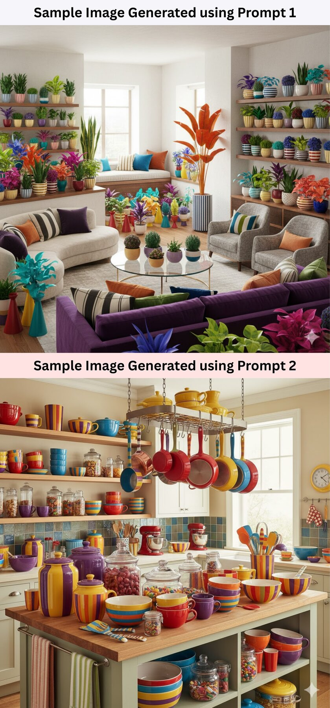
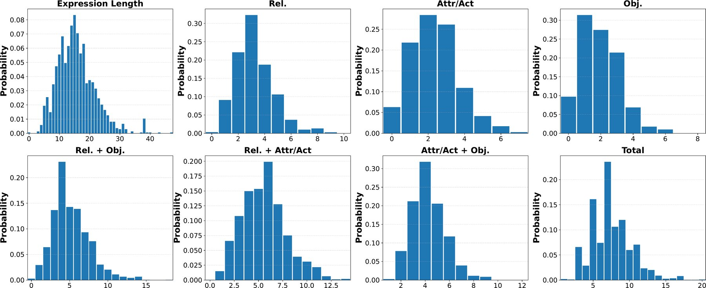
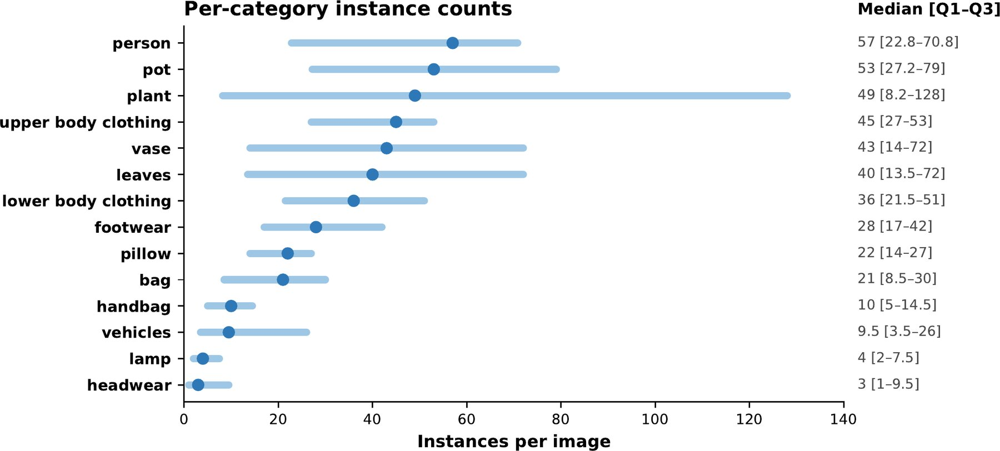
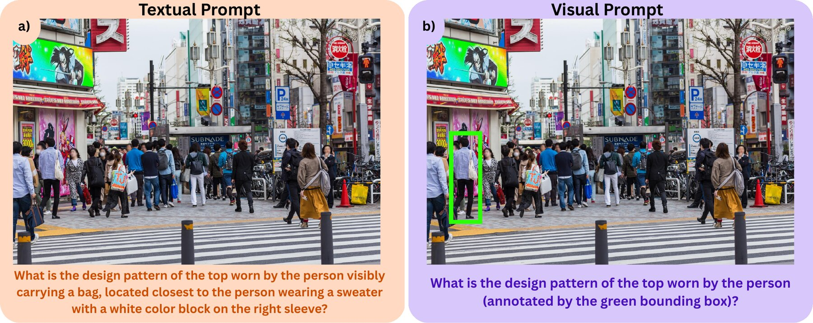
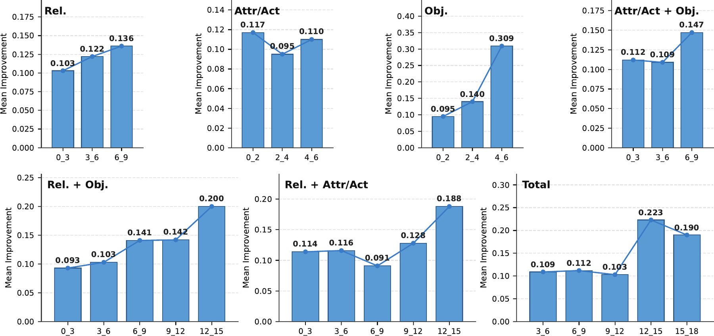
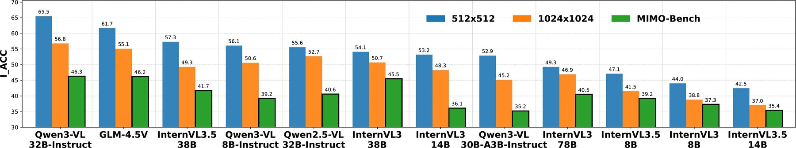
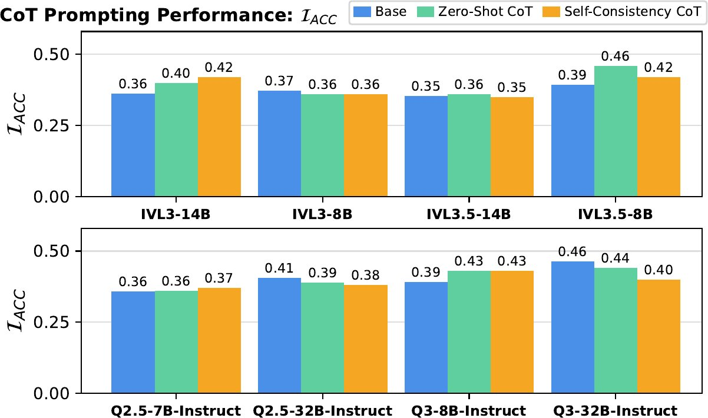

What do MLLMs know about “Waldo”?
Evaluating Visual Reasoning under Multi-Instance Multi-Object Challenges

Abstract
Recent advances in Multimodal Large Language Models (MLLMs) have led to significant progress in visual reasoning capabilities. However, existing benchmarks curate image-question pairs pertaining to object categories with few instances, enabling trivial object referencing and limited visual ambiguity. In this work, we introduce MIMO-Bench, a benchmark for evaluating MLLMs in a Multi-Instance per Multi-Object categories (MIMO) setting. Each image-question pair in our benchmark pertains to instances belonging to object categories with multiple instances. The presence of such similar feature distractors causes hindrance in basic visual reasoning tasks, necessitating the referring expression to be composed of multiple visual subtasks to uniquely and unambiguously identify the target object. MIMO-Bench comprises 3,802 image-question pairs across attribute binding and numerical counting tasks. Despite impressive performances on existing benchmarks, both SOTA open-source (InternVL, QwenVL) and proprietary (Gemini, GPT-5) models exhibit substantially lower performance on MIMO-Bench, highlighting their limitations in the MIMO setting.
Key Findings
1. A benchmark for dense scenes
MIMO-Bench contains 3,402 attribute-binding and 400 numerical-counting questions over scenes with many instances per object category.
2. Current MLLMs struggle
On real images, the best zero-shot model reaches only 52.8% IACC on attribute binding and 56.7% IMRA on counting. Humans score close to 90%.
3. Referring expressions and distractors are key bottlenecks
Visual prompting improves IACC by about 15.5 points on average. Graying and inpainting out distractors improves performance further.
4. Iterative visual access helps
Letting the model choose a relevant region and look again consistently improves accuracy. Chain-of-Thought prompting does not reliably help.
MIMO-Bench
MIMO-Bench evaluates MLLMs in scenes where dense same-category instances act as natural visual distractors. Telling them apart requires compositional referring expressions (REs) that combine attributes, actions or states, and relations to neighbouring objects. The benchmark covers two tasks, on both real (SA-1B) and synthetic images:
- Attribute Binding (AB): multiple-choice questions that check whether the model attaches each specified attribute to the same target instance.
- Numerical Counting (NC): open-ended counting of the instances that match an RE. Counts are organised hierarchically, so region-level child counts sum to their parent count.





Evaluation on MIMO-Bench
Experiment Setup
We evaluate API-accessed models (Gemini-3.5-Flash, Gemini-3.1-Pro-Preview, Gemini-2.5-Pro/Flash, GPT-5, GLM-4.5V, InternVL3.5-241B-A28B, InternVL3-78B) and locally evaluated open-weight models (the Qwen3-VL, Qwen2.5-VL, InternVL3 and InternVL3.5 families, and GLM-4.1V-9B-Thinking). Every model gets the same task prompt and answer-format instruction. The only model-specific parts are the official chat templates, image preprocessing and default model-card settings. We also report 95% bootstrap confidence intervals (20,000 replicates) in the paper's appendix.
Evaluation Metrics
Attribute Binding. Instance Accuracy (IACC) is the fraction of attribute-binding questions answered correctly. Each question is one image–object–RE–attribute quadruplet. To test whether a model forms a unified, grounded representation of an object, we also report Group Accuracy (GACC). GACC computes accuracy within each target group (all valid attribute questions for one instance) and then averages over groups, weighting each group equally. Objects described by only a few attributes are therefore penalised more for a single misbinding.
Numerical Counting. We use Mean Relative Accuracy (MRA). A prediction counts as correct at threshold θ if its relative error is below 1 − θ, averaged over θ ∈ {0.5, 0.55, …, 0.95}. Zero-count questions are scored by exact match. Counting queries are hierarchical. For example, “Count the throw pillows in the image” (parent) splits into “…on the purple sofa closest to the windows” and “…on the striped armchair farthest from the wall-mounted shelves” (children), with N = ΣkNk. We report IMRA over all counting queries, GMRA over parent (global) queries and LMRA over localized child queries. Comparing GMRA with LMRA shows whether a model counts better over the full scene or within a subregion.
| Model | Attribute Binding (AB) | Numerical Counting (NC) | ||||||||
|---|---|---|---|---|---|---|---|---|---|---|
| Real | Synthetic | Real | Synthetic | |||||||
| IACC | GACC | IACC | GACC | IMRA | LMRA | GMRA | IMRA | LMRA | GMRA | |
| Chance & Human Baselines | ||||||||||
| Chance (Random) | 15.8 | 15.6 | 15.8 | 15.3 | – | – | – | – | – | – |
| Chance (Majority) | 34.3 | 35.5 | 34.3 | 33.1 | – | – | – | – | – | – |
| Human | 89.3 | 86.7 | 85.7 | 87.5 | 87.7 | 86.4 | 90.1 | 89.6 | 87.4 | 92.0 |
| API-accessed MLLMs | ||||||||||
| Gemini-3.5 Flash (Low) | 45.5 | 44.8 | 73.0 | 75.6 | 52.5 | 49.4 | 46.7 | 66.9 | 66.0 | 67.2 |
| Gemini-3.1 Pro Preview (Low) | 46.5 | 46.3 | 71.8 | 73.5 | 56.7 | 55.8 | 63.3 | 64.0 | 62.6 | 64.1 |
| Gemini-2.5 Flash | 51.3 | 51.9 | 48.1 | 42.1 | 30.0 | 28.3 | 38.3 | 47.2 | 41.2 | 51.4 |
| Gemini-2.5 Pro | 49.1 | 49.5 | 47.2 | 44.9 | 37.3 | 24.2 | 71.7 | 56.1 | 53.2 | 63.9 |
| GPT-5 (minimal) | 32.0 | 31.2 | 28.0 | 24.1 | 45.8 | 47.5 | 36.7 | 43.0 | 40.8 | 47.1 |
| GPT-5 (medium) | 52.8 | 53.4 | 49.8 | 48.1 | 51.5 | 55.0 | 56.7 | 47.5 | 42.8 | 54.3 |
| GLM-4.5V | 50.3 | 50.0 | 41.7 | 33.8 | 33.9 | 36.2 | 38.3 | 47.3 | 48.5 | 38.6 |
| InternVL3.5-241B-A28B | 47.6 | 45.2 | 43.3 | 42.9 | 47.8 | 50.0 | 39.5 | 51.2 | 50.6 | 50.1 |
| InternVL3-78B | 40.2 | 40.3 | 37.6 | 35.0 | 38.9 | 43.3 | 38.3 | 36.6 | 34.2 | 34.3 |
| Locally evaluated open-weight MLLMs | ||||||||||
| Qwen3-VL-32B-Instruct | 47.7 | 48.5 | 47.0 | 45.0 | 38.5 | 35.4 | 55.0 | 53.2 | 54.8 | 49.8 |
| Qwen3-VL-8B-Instruct | 42.4 | 42.0 | 36.2 | 32.5 | 34.2 | 28.3 | 43.3 | 47.6 | 48.9 | 35.5 |
| Qwen3-VL-30B-A3B-Instruct | 36.6 | 33.2 | 28.2 | 27.1 | 25.0 | 35.4 | 20.0 | 41.0 | 44.5 | 38.8 |
| Qwen2.5-VL-72B-Instruct | 38.6 | 38.7 | 50.6 | 45.1 | 30.8 | 35.8 | 23.3 | 46.2 | 47.0 | 43.1 |
| Qwen2.5-VL-32B-Instruct | 38.4 | 36.9 | 41.2 | 41.0 | 28.9 | 28.3 | 28.3 | 42.4 | 40.0 | 47.2 |
| Qwen2.5-VL-7B-Instruct | 35.5 | 35.2 | 36.4 | 34.3 | 27.3 | 30.0 | 31.7 | 33.9 | 33.5 | 27.2 |
| InternVL3.5-38B | 40.9 | 40.3 | 46.5 | 44.6 | 27.3 | 35.4 | 20.0 | 42.5 | 44.3 | 42.0 |
| InternVL3.5-14B | 32.1 | 31.7 | 39.0 | 40.1 | 31.1 | 37.5 | 16.7 | 42.5 | 38.9 | 47.5 |
| InternVL3.5-8B | 38.6 | 38.1 | 44.2 | 43.7 | 36.1 | 45.8 | 13.3 | 44.2 | 41.1 | 45.1 |
| InternVL3-38B | 42.3 | 42.5 | 48.3 | 44.7 | 33.2 | 49.0 | 20.0 | 45.6 | 45.3 | 39.6 |
| InternVL3-14B | 35.9 | 35.1 | 39.7 | 38.9 | 26.8 | 32.5 | 6.7 | 37.1 | 34.8 | 40.7 |
| InternVL3-8B | 34.4 | 35.5 | 38.9 | 37.2 | 26.7 | 36.7 | 5.7 | 37.3 | 41.3 | 24.3 |
| GLM-4.1V-9B-Thinking | 34.6 | 36.2 | 38.7 | 35.3 | 27.3 | 25.0 | 50.0 | 24.9 | 32.6 | 20.0 |
Table 1. Evaluation results on MIMO-Bench, with AB and NC reported separately for the real and synthetic splits. Scores are percentages. Random chance is the mean 1/N over answer options. The majority guess picks the most common answer per attribute type. “Low”, “medium” and “minimal” are reasoning efforts. Bold = best model and underline = second best.
Result Analysis
Baselines and the human–model gap. We anchor all model scores against three references: a random-chance baseline, a majority-guess baseline and a human baseline (six people who did not annotate MIMO-Bench, each solving 25 AB groups and 15 NC groups). Humans operate near ceiling on both tasks and both splits, so the benchmark is far from saturated. The gap to the best model is large everywhere. On real AB, the strongest model (52.8) trails humans by roughly 36 points. On real NC, the strongest one-shot global counter (GMRA = 71.7) is still about 18 points below humans. Several open-weight models sit at or barely above the majority baseline. The only scores near the human range are the two Gemini-3.x models on synthetic AB (73.0, 71.8). We treat these as an anomaly because the same two models are mid-pack on real AB (45.5, 46.5) and no other model shows the effect. A self-preference check only establishes that the generating model, Gemini-2.5-Pro, is not advantaged on its own images. Their synthetic scores move by at most 3 points across shuffled and deliberately biased option sets, so the effect is robust to these perturbations. It remains an observed anomaly, not evidence of genuine capability.
Attribute binding is far from being solved, and the weakest models barely beat chance predictors. On real images the ceiling is low. No model exceeds 52.8% IACC (GPT-5-medium), with Gemini-2.5-Flash (51.3) and GLM-4.5V (50.3) close behind, all far below the human baseline. Against a random-choice baseline of 15.8% and a majority-answer baseline of 34.3%, the gains are modest. Several models (Qwen3-VL-30B-A3B-Instruct and GPT-5-minimal, on both splits) fall at or near the majority baseline. They add little over always predicting the most frequent answer.
Numerical Counting requires forming the correct target set from an RE, excluding same-category distractors and enumerating the valid instances. Models differ in whether they favour global (GMRA) or localized (LMRA) counting. Gemini-2.5-Pro has the highest real-split GMRA (71.7). On the synthetic split the Gemini-3.x models lead (67.2 for Gemini-3.5-Flash-Low and 64.1 for Gemini-3.1-Pro-Preview-Low). Several open-weight models benefit from localized decomposition, e.g. InternVL3-38B (LMRA = 49.0 vs. GMRA = 20.0 on real) and InternVL3.5-8B (45.8 vs. 13.3). This suggests that shrinking the search space helps form the target set when full-image counting is hard. A parent-level gap analysis confirms this is not an aggregation artifact, and models rarely do well on both. Real images are harder mainly for instance-level and localized counting. Gemini-2.5-Pro drops from IMRA/LMRA = 56.1/53.2 (synthetic) to 37.3/24.2 (real), and Qwen3-VL-32B-Instruct declines similarly. NC trends are not explained by scale, as gains are non-monotonic across the Qwen and InternVL variants.
MIMO-Crop. Most existing benchmarks use low or standard-resolution images with sparsely distributed objects. MIMO-Bench uses high-resolution real (2500×1500) and synthetic (1024×1024) images, because high resolution lets a single scene hold many same-category distractors. We also evaluate on MIMO-Crop, which crops a 512×512 or 768×768 window around each target. Because each crop is a window, not a downsample, the target keeps full fidelity and appears larger in the frame, and fewer same-category distractors fall inside it.
Models improve on MIMO-Crop, so full-image resolution, object scale and distractor burden all contribute to the difficulty. The recovery is incomplete, though. On average, models improve from 39.5 on full MIMO-Bench to 48.2 on MIMO-Crop768 and 48.9 on MIMO-Crop512, but stay far below their average on standard benchmarks (76.2). Resolution and object scale alone do not explain MIMO-Bench's difficulty: models struggle even when the target region is enlarged and same-category distractors are reduced.
| Model | MIMO | Crop 768 | Crop 512 | Existing† |
|---|---|---|---|---|
| Qwen3-VL-32B-I | 47.5 | 55.0 | 48.9 | 81.4 |
| Qwen3-VL-30B-A3B-I | 33.8 | 42.2 | 44.9 | 77.3 |
| Qwen3-VL-8B-I | 40.3 | 48.9 | 44.4 | 75.6 |
| Qwen2.5-VL-72B-I | 42.6 | 45.7 | 48.3 | 78.3 |
| Qwen2.5-VL-32B-I | 39.3 | 48.5 | 45.0 | 74.7 |
| Qwen2.5-VL-7B-I | 35.8 | 42.8 | 47.6 | 71.7 |
| InternVL3.5-38B | 42.8 | 51.2 | 55.5 | 79.5 |
| InternVL3.5-14B | 34.4 | 46.9 | 46.4 | 74.1 |
| InternVL3.5-8B | 40.5 | 48.4 | 50.7 | 72.1 |
| InternVL3-78B | 39.3 | 47.9 | 49.5 | 79.4 |
| InternVL3-38B | 44.3 | 52.8 | 56.7 | 78.0 |
| InternVL3-14B | 37.2 | 51.1 | 50.7 | 74.3 |
| InternVL3-8B | 35.9 | 44.7 | 46.8 | 73.6 |
Table 2. IACC on MIMO-Bench, MIMO-Crop 768/512 and standard benchmarks. †Mean of MMStar, RealWorldQA and MM-Bench. I = Instruct.
Synthetic gains are model-dependent. The synthetic advantage is by far the largest for the two Gemini-3.x models (+27.5 and +25.3 points on synthetic AB), with a more moderate gain for Qwen2.5-VL-72B-Instruct (+12.0). Several other models are flat or do better on real images, including Qwen3-VL-32B-Instruct (−0.7), GLM-4.5V (−8.6), Gemini-2.5 and GPT-5. Synthetic scenes are not uniformly easier. The synthetic–real gap reflects model-specific strengths, not a general property.
Counting as a function of target-set size. Aggregate counting metrics hide a clear structure. Sparse target sets are prone to false positives. For a ground-truth count of 0, models reach only 0.33 exact match, with a positive bias of +1.08, often counting visually similar distractors as valid targets. Small-to-moderate sets are the most reliable regime. Mean MRA reaches 0.50 at count 3 and 0.52 at count 5, yet exact match there is only 0.35 and 0.29, so many predictions are near misses. This resembles the small-numerosity (subitizing) regime in cognitive science. As the target set becomes dense, performance degrades sharply and the error direction flips. Bias turns negative at count 4 (−0.54) and undercounting grows with set size: −2.28 at 7, −3.12 at 10, −4.55 at 11 and −9.56 at 14. Exact match collapses to 0.03 at count 7 and 0.00 at count 14. This mirrors cognitive evidence that grouped or visually similar items are underestimated because they are encoded as fewer perceptual units. In short, sparse scenes are vulnerable to false inclusion, while dense scenes are compressed into underestimates.
In InternVL3, language-model scaling alone does not explain AB gains. InternVL3 improves from the 8B/14B variants to 38B (real 34.4/35.9 → 42.3; synthetic 38.9/39.7 → 48.3). That jump coincides with an upgrade from the ~300M-parameter InternViT encoder to InternViT-6B at ≥38B. Beyond 38B the trend stops. InternVL3-78B regresses to 40.2 (real) and 37.6 (synthetic) despite keeping the 6B encoder and using a far larger language model.
Attribute-level failure modes. Most object categories fail within a narrow band of 55–68% (person 63.3%, plant 64.1%, utensil 68.0%). Two-wheelers are the exception at 36.8%. Fine-grained attributes (color, pattern, sleeve length, shape, material, texture) fail more often than coarse ones (type, presence): 65.5% vs. 55.7%. The gap is clearest when the same object is asked at both levels. A pillow's type fails 26.2% of the time but its color fails 78.0% and its pattern 75.3%. A bag's type fails 35.1% but its pattern 79.2%. Pattern and color are consistently the hardest (pattern fails 70.9% across clothing, bags and pillows). Shape, material and sleeve length are more moderate (e.g. pillow shape 32.1%, plant-pot material 42.6%).
Thinking vs. non-thinking. Test-time reasoning does not uniformly improve MIMO performance (tested on an 800-sample subset). Its clearest benefit is in localized, decomposable counting. For Qwen3-VL-8B, thinking improves every metric, with IACC rising 39.2 → 44.4 and LMRA rising sharply 40.0 → 62.3. Qwen3-VL-30B-A3B also improves on both AB metrics. Qwen3-VL-32B shows a mixed effect: thinking slightly reduces AB and global counting (GMRA 50.4 → 44.2) while still improving localized counting. Proprietary models are similarly inconsistent. Higher reasoning effort largely hurts Gemini-3.1-Pro-Preview on counting (IMRA 62.5 → 57.7) but helps Gemini-3.5-Flash on every counting metric (LMRA 58.3 → 71.6). Overall, test-time reasoning does not reliably improve performance on MIMO-Bench.
| Model | Thk. | IACC | GACC | IMRA | LMRA | GMRA |
|---|---|---|---|---|---|---|
| Qwen3-VL-8B | w/o | 39.2 | 40.1 | 43.9 | 40.0 | 37.3 |
| w/ | 44.4 | 44.8 | 47.3 | 62.3 | 43.2 | |
| Qwen3-VL-30B-A3B | w/o | 35.2 | 32.3 | 34.0 | 39.7 | 30.5 |
| w/ | 37.0 | 37.3 | 35.4 | 40.1 | 31.3 | |
| Qwen3-VL-32B | w/o | 46.3 | 46.0 | 46.3 | 46.1 | 50.4 |
| w/ | 46.2 | 43.5 | 48.8 | 48.9 | 44.2 | |
| G3.1-Pro-Preview | w/o | 53.8 | 54.2 | 62.5 | 58.7 | 62.3 |
| w/ | 53.2 | 54.3 | 57.7 | 52.8 | 63.5 | |
| G3.5-Flash | w/o | 53.3 | 56.5 | 60.3 | 58.3 | 58.3 |
| w/ | 56.9 | 54.6 | 66.7 | 71.6 | 63.3 |
Table 3. Effect of thinking. w/o / w/ = Instruct / Thinking variant for Qwen, and Low / High reasoning effort for Gemini.
Complexity Breakdown
A model's attribute-binding errors come from two distinct stages. The first is comprehending the referring expression (RE) to reach the target. The second is binding attributes once the target is found. Similar-feature distractors affect both. We therefore ask:
- How do MLLMs perform when the complexity of comprehending the referring expression is removed?
- How do MLLMs perform when the presence of distractors is reduced?
Visual Prompting


We test how models perform when the referring expression no longer has to be comprehended. In the standard setting the model must parse the textual RE and ground it to the correct instance. In the visual-prompting setting we remove this step by replacing the RE with a bounding box or polygon drawn directly on the target. Removing the RE improves IACC for every evaluated model, and the benefit grows with RE complexity. The gain increases as the number of compositional elements in the expression rises, so the RE is a larger obstacle precisely when it is most compositional. Even with the target marked directly, no model exceeds ~65%. The marker alters the image, though, so the residual error cannot be attributed to attribute binding alone. The paper's appendix attempts to separate grounding from binding.

Performance as a Function of Visual Distractor Reduction


We study how performance changes under interventions that reduce visual distractor burden. With graying, we gray out the entire image except a window centred on the queried object, using window sizes of 512 and 1024. Smaller windows leave fewer same-category distractors visually active. The target's scale, the image resolution and the textual prompt stay fixed throughout. IACC generally rises as the window shrinks and fewer distractors remain in view, for most evaluated models. The effect is directional but not strictly proportional: the accuracy gained per distractor removed varies widely across images, and even between window sizes of the same image. Distractor count alone does not predict the size of the change.
Graying reduces distractor burden, but it does not cleanly isolate distractor count. It suppresses the surrounding region, which also removes context and makes the retained region more salient. We therefore compare it against blur and inpainting controls. Performance generally improves under all of these interventions as distractor burden drops, so the effect is not specific to graying. Inpainting is the closest practical approximation to removing selected same-category distractors while preserving the rest of the image. Segmentation and generation artifacts mean it is not an exact counterfactual. The similar behaviour under inpainting supports the view that reducing visual distractor burden benefits MIMO performance, though we do not claim a clean causal effect of distractor count alone.
What Enhances MLLM Performance in MIMO?
A human analogy. In MIMO settings, objects rarely have a clear visual “pop-out” effect, so humans must actively search the scene to locate targets. Semantic and syntactic cues from the referring expression or internal reasoning guide this search, together with pre-attentive visual features. When that guidance is weak, humans fall back on serial search, scanning objects one by one. Effective human perception therefore examines the image dynamically, at multiple spatial scales, refining attention iteratively instead of fixing it at input as a static forward pass does.
We hypothesise that the MIMO setting rewards this dynamic visual access. Several top performers on MIMO-Bench already include such mechanisms. Qwen3-VL's DeepStack re-injects visual features across multiple language-model layers, and GPT-style interleaved image–text reasoning re-attends to relevant image regions across intermediate steps. We cannot directly verify that these mechanisms cause the observed performance, so we run a small exploratory study.
Naive relevant-region extraction. We run multi-turn inference. The model receives the original question and proposes a region, as bounding-box coordinates, that it considers sufficient to answer. That region is cropped and re-queried with the original question to get the final answer. We call this naive because the model was never trained to propose a relevant crop. Even this single-pass narrowing improves performance for every evaluated model, supporting the hypothesis that narrowing the search space dynamically helps, much as it does for humans. Fixed and random crop controls, a two-pass no-crop control and IoU-conditioned accuracy separate localization quality from the effects of cropping, rescaling and the extra inference pass.
| Model | Zoom | Δ IACC |
|---|---|---|
| Qwen3-VL-8B-Instruct | Naive | +0.89 |
| Qwen2.5-VL-7B-Instruct | Naive | +1.50 |
| InternVL3-8B | Naive | +5.46 |
| InternVL3-14B | Naive | +16.90 |
| InternVL3.5-8B | Naive | +2.14 |
| InternVL3.5-14B | Naive | +11.75 |
| Qwen3-VL-32B-Instruct | Naive | +3.00 |
Table 4. Change in IACC from naive zooming, relative to MIMO-Bench.
Does CoT enhance MIMO performance? We test text-based Zero-Shot CoT (ZS-CoT) and Self-Consistency CoT (SC-CoT, five generations with majority voting). CoT gives model-dependent gains, not consistent improvement. Some models benefit from at least one variant: InternVL3.5-8B improves from 0.39 to 0.46 under ZS-CoT, InternVL3-14B from 0.36 to 0.42 under SC-CoT, and Qwen3-VL-8B from 0.39 to 0.43 under both. Qwen2.5-VL-7B improves marginally (0.36 → 0.37), and InternVL3.5-14B is nearly unchanged. Other models degrade. InternVL3-8B drops slightly, Qwen2.5-VL-32B falls from 0.41 to 0.39 (ZS) and 0.38 (SC), and Qwen3-VL-32B falls from 0.46 to 0.44 (ZS) and 0.40 (SC). CoT can give modest gains for some models, but it is not uniformly beneficial.

Conclusion
We introduce MIMO-Bench, a benchmark for evaluating multimodal LLMs in settings with multiple instances across multiple object categories. MIMO-Bench is built around the complexity that distractors introduce, and our experiments show how strongly distractors hinder performance. Removing the visual subtask posed by referring expressions yields a large gain, and reducing visual distractor burden generally improves performance. We believe current MLLMs should first master the elementary tasks of attribute binding and numerical counting in MIMO before tackling harder problems.
We also argue that in settings such as MIMO, an ideal evaluation should couple reasoning with localization, requiring models to localize the referred object. We explored two interfaces for this: selecting the correct target among visually marked candidate boxes, and directly predicting its coordinates. They impose different demands and give substantially different localization behaviour, so we cannot treat localization as a stable, mandatory intermediate stage of the benchmark. To support future evaluation in this direction, we release the target masks and boxes. As models become more robust, we hope MIMO-Bench serves as a realistic benchmark and inspires further research on reasoning in multimodal LLMs.
BibTeX
@article{mundra2026mimobench,
title={What do MLLMs know about ``Waldo''? Evaluating Visual Reasoning under Multi-Instance Multi-Object Challenges},
author={Mundra, Saumya and Mondal, Ajoy and Jawahar, C. V. and Balasubramanian, Vineeth N},
journal={Preprint},
year={2026}
}